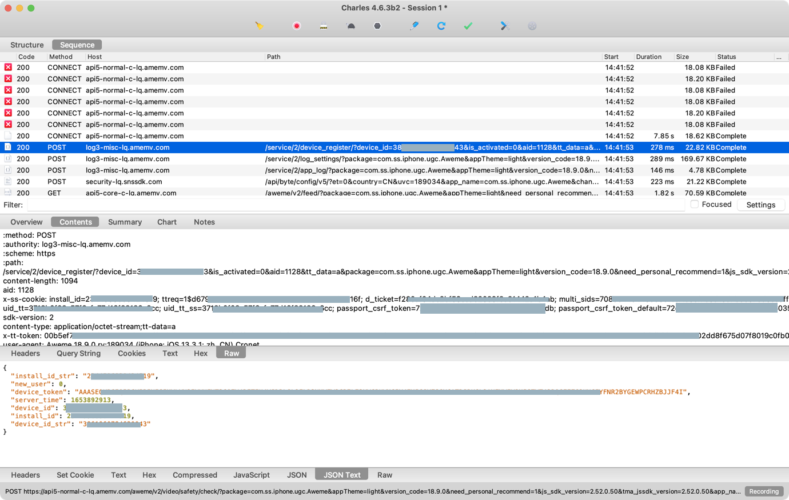

iOS版抖音
绕过iOS版抖音的证书绑定校验
比如iOS版抖音内部就做了证书校验
想要逆向，绕过抖音的证书绑定校验话，可以通过写hook代码绕过证书校验，即可实现抓包HTTPS看到明文数据。
具体步骤：
之前已给此处iPhone7搭建过Charles抓包环境：
- 已安装过Charles的根证书：
charles-ssl-proxying-certificate.cer- 且已信任过
此处只需要去：
把Charles的SSL根证书放入iPhone中对应的的位置，比如：
/Library/PreferenceLoader/Preferences/charles/charles-ssl-proxying-certificate.cer
然后再去写hook代码：
/*==============================================================================
Hook: Charles cert -> bypass https capture
==============================================================================*/
// to fix Charles capture https show Unknown issue
// https://bbs.pediy.com/thread-270700.htm
// https://iosre.com/t/topic/20202/46
#define CHARLES_CERT_FILE @"/Library/PreferenceLoader/Preferences/charles/charles-ssl-proxying-certificate.cer"
bool cfgHookEnable_aweme = true;
%hook TTNetworkManagerChromium
- (NSArray *)ServerCertificate {
iosLogDebug("%s", "");
NSArray* serverCertList = %orig();
iosLogDebug("serverCertList=%{public}@", serverCertList);
//// NSString *serverCertListStr = [NSArray nsStrListToStr:serverCertList isSortList:FALSE isAddIndexPrefix:TRUE];
// NSString *serverCertListStr = [CrifanLibHookiOS nsStrListToStr:serverCertList isSortList:FALSE isAddIndexPrefix:TRUE];
// iosLogInfo("serverCertListStr=%{public}@", serverCertListStr);
//
//// return nil;
// return serverCertList;
NSMutableArray* newCertList = [NSMutableArray arrayWithArray: serverCertList];
iosLogDebug("newCertList=%{public}@, newCertList.count=%{public}lu", newCertList, [newCertList count]);
if (cfgHookEnable_aweme) {
NSString *certResourcePath = CHARLES_CERT_FILE;
iosLogDebug("certResourcePath=%{public}@", certResourcePath);
NSFileManager *defaultManager = [NSFileManager defaultManager];
BOOL isExistedCert = [defaultManager fileExistsAtPath: certResourcePath];
iosLogInfo("isExistedCert=%s", boolToStr(isExistedCert));
if (isExistedCert) {
NSData *certP12Data = [NSData dataWithContentsOfFile: certResourcePath];
iosLogDebug("certP12Data=%{public}@", certP12Data);
[newCertList addObject: certP12Data];
iosLogDebug("newCertList=%{public}@, newCertList.count=%{public}lu", newCertList, [newCertList count]);
}
}
NSMutableArray* retNewCertList = [newCertList copy];
iosLogDebug("retNewCertList=%{public}@", retNewCertList);
return retNewCertList;
}
%end
再去Charles做好基本的代理配置：
- Charles中开启代理
- iPhone中使用Mac中的Charles代理
即可顺利实现iPhone7中抖音的https的抓包，看到https的明文了：

- 注：此处代码只对当时的某些版本，比如：抖音
17.8、18.9，是有效的- -》 目前最新版本抖音，此代码已无效。
- -》 但是也有人说，最新版本也是有效的。待各位自己确认核实。
- -》 目前最新版本抖音，此代码已无效。